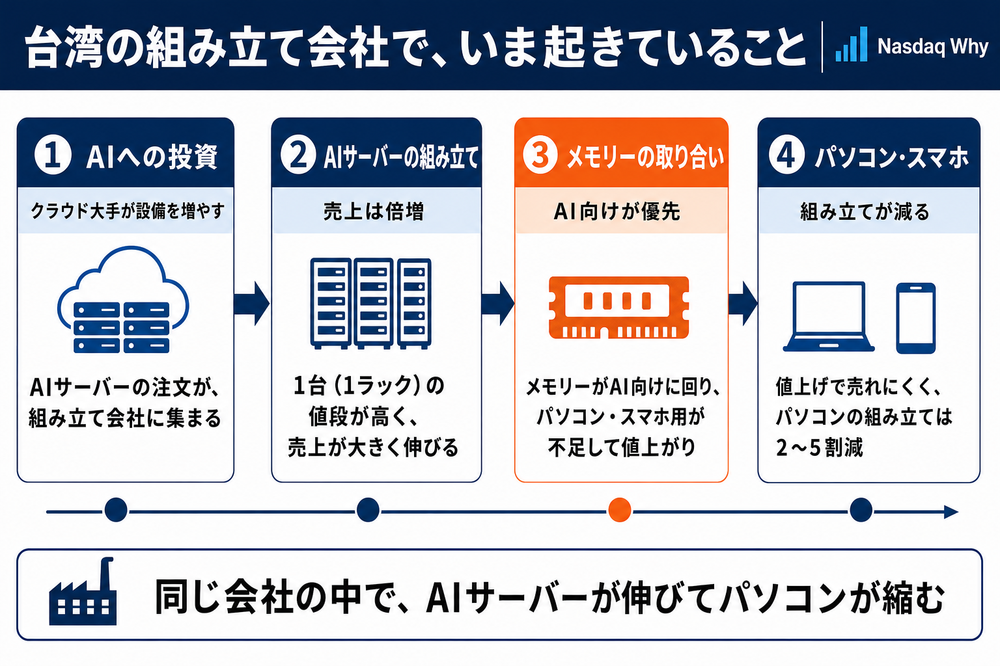
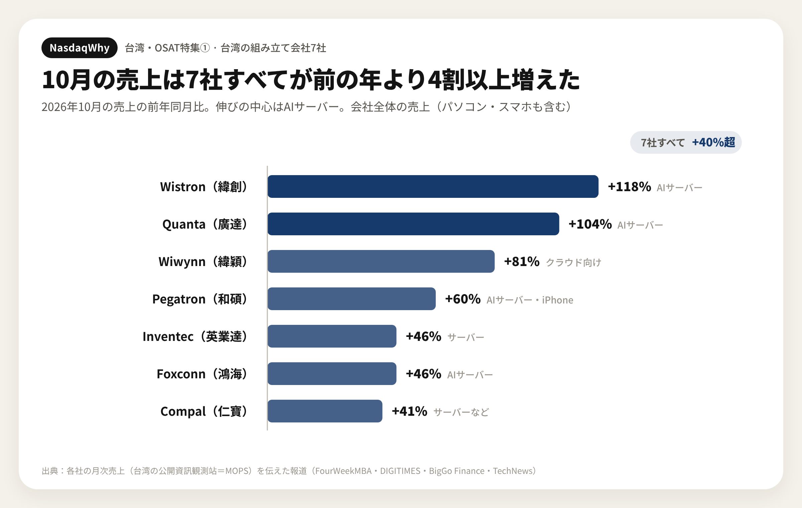
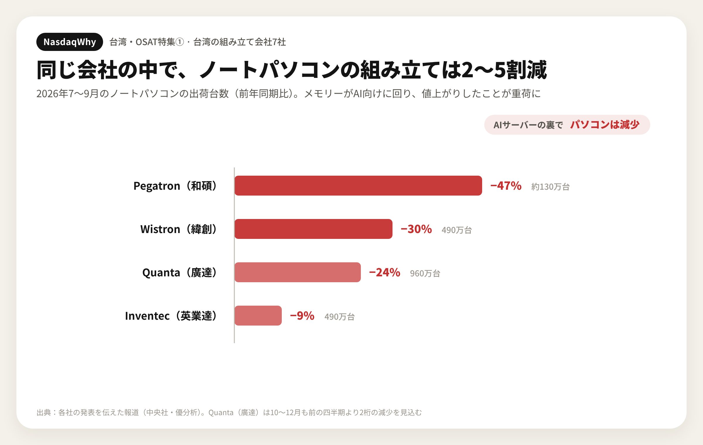

台湾・OSAT特集
AIサーバーは伸びているのに、なぜスマホやパソコンの組み立ては苦しい？――台湾の組み立て会社7社
iPhoneやパソコン、AIサーバーを「組み立てる」台湾の会社（ODM・EMSと呼ばれます）の10月の売上は、7社すべてが前の年より4割以上増えました。けれど中身を見ると、伸びているのはAIサーバーだけです。パソコンの組み立ては2〜5割減り、スマホも部品不足の影響を受けています。何が伸びて、何が苦しいのか。部品不足・値上げ・納期の長期化まで、7社の数字で見ていきます。

10月の売上：7社すべてが前の年より増えた
台湾の上場会社は、毎月の売上を翌月10日ごろまでに発表します（MOPSという公開サイト）。10月の売上は、組み立て大手7社すべてが前の年の同じ月より4割以上増えました。
いちばん伸びたのはWistron（緯創）で、前の年の2倍以上の約4,026億台湾ドルでした。Quanta（廣達）も2倍を超えています。どちらもAIサーバーが中心です。

| 会社 | 10月売上 | 前年比 | 伸びた理由 |
|---|---|---|---|
| Wistron（緯創） | 4,026億 | +118% | AIサーバー |
| Quanta（廣達） | 3,533億 | +104% | AIサーバー |
| Wiwynn（緯穎） | — | +81% | クラウド向け |
| Pegatron（和碩） | 1,881億 | +60% | AIサーバー・iPhone |
| Inventec（英業達） | — | +46% | サーバー |
| Foxconn（鴻海） | 約1.3兆 | +46% | AIサーバー |
| Compal（仁寶） | 871億 | +41% | サーバーなど |
単位は台湾ドル。「—」は金額を確認できなかったもの。Foxconn・Quantaなどはパソコンやスマホも含めた全体の売上です。
7〜9月期の決算：売上は過去最高、でも利益率は薄い
Foxconn（鴻海）の7〜9月期の売上は3.03兆台湾ドルで、前の年より47%増え、市場の予想を上回りました。9月は1か月で初めて1兆台湾ドルを超えました。
Wiwynn（緯穎）は7〜9月期の売上が4,346億台湾ドル（+63%）、税引き後の利益が234億台湾ドル（+52%）で、どちらも過去最高でした。ただ、利益の伸びは売上の伸びより小さく、売上に対する利益の割合は5.4%と、前の年（約5.8%）より少し下がっています。
Wistron（緯創）は1〜9月の税引き後の利益が428億台湾ドルと、前の年の2倍以上でした。台湾とメキシコでAIサーバーの工場を広げるため、134億台湾ドルの追加の設備投資も決めています。
なぜAIサーバーは「売上は大きいのに、もうけは薄い」のか
AIサーバーは、高い部品（GPUやメモリー）をたくさん使います。組み立て会社は部品を買って組み立て、まるごと売るので、売上は大きくなります。でも、部品代はほとんどそのまま販売価格に乗るだけなので、売上に対するもうけの割合は小さくなります。
Quanta（廣達）は、GPUなど高い部品をお客さん自身に用意してもらう「委託（コンサインメント）」のやり方を増やすと説明しました。組み立てと検査の代金だけを受け取るので、利益率は上がりますが、売上の金額は小さく見えます。Quantaは「利益率が良くなって、売上も減らない、という2つは同時には起きにくい」と話しています。
1ラックの値段が上がり続けていることも理由です。Quantaによると、NVIDIAの GB200 は前の世代のおよそ2倍の値段で、次の世代はさらに高くなります。組み立て会社が高い在庫を抱え続けるのは、負担が大きいのです。
パソコンの組み立ては2〜5割減
同じ会社の中でも、パソコンは減っています。7〜9月期のノートパソコンの出荷台数は、前の年と比べて次のとおりでした。

| 会社 | 7〜9月の台数 | 前年比 |
|---|---|---|
| Pegatron（和碩） | 約130万台 | −47% |
| Wistron（緯創） | 490万台 | −30% |
| Quanta（廣達） | 960万台 | −24% |
| Inventec（英業達） | 490万台 | −9% |
各社の発表から。Quantaは10〜12月も前の四半期より2桁の減少を見込んでいます。
パソコンが減る理由：メモリーの取り合い
- メモリー不足：メモリーの会社は、もうけの大きいAIサーバー向け（HBMなど）を優先しています。そのため、パソコンやスマホ用のメモリーが足りなくなりました。
- 値上がり：調査会社 TrendForce は、パソコン用メモリーの取引価格が10〜12月にさらに13〜18%上がると見ています（7〜9月は18〜23%の値上がり）。
- 前倒しの反動：値上がりを避けようと、パソコンの会社は1〜6月に多めに買いました。その反動で、ノートパソコンの出荷は7〜9月に前の四半期より15.8%減りました（TrendForce）。
- スマホにも影響：Pegatron（和碩）は、記憶部品の不足でスマホなど通信機器が10〜12月に少し減るかもしれないと話しています。部品の少ない中で、ブランドの会社はもうけの大きい高い機種を優先しています。
部品不足・納期の長期化・値上げ
- 納期が40週以上：Inventec（英業達）は7月、メモリーやCPUの不足がサーバーにも広がり、納期が40週を超えるものがあると警告しました。
- 早めの買いだめ：Pegatron（和碩）は、AIサーバーの部品不足が基板（PCB）や電源にも広がっているとして、2027年前半の分まで前倒しで部品を確保していると報じられています。
- 冷やす部品も不足：AIサーバーは水で冷やす「液冷」が当たり前になりつつあります。液冷の継ぎ手（クイックカプラー）を作る富世達は、7〜9月期の利益が過去最高で、売上に対する粗利益の割合は38%でした。組み立て会社（5%前後）より、部品の会社のほうがもうけの割合は大きいのです。
- 世代の切り替え：NVIDIAの新しい世代（Vera Rubin）への切り替えの時期です。Foxconnは10〜12月から新しい世代の出荷を始める計画で、新製品の作りはじめは費用がかさみやすいといわれます。
関税と工場の場所：米国・メキシコへ
米国の関税に備えて、組み立て会社は米国やメキシコに工場を広げています。Wistronはメキシコの工場でサーバーの生産を増やすための投資を決めました。Compal（仁寶）は米テキサス州の工場でAIサーバーを作る計画で、Pegatronもテキサス州に工場を建てています。
米国ではデータセンターへの住民の反対も広がっていますが、Quantaは「今のところ注文を変えたお客さんはいない」と説明しています。
これから伸びそうなもの・注意すること
伸びそうなのは、AIサーバーと、それを支える部品（液冷、電源、高速の通信機器）です。Quantaは来年、サーバーが売上の85〜90%になると見ています。一般のサーバー（AIでないもの）も、AIの「エージェント」が広がることで注文が増えていると、FoxconnやQuantaは話しています。
注意したいのは、売上の大きさと、もうけの大きさが別だということです。委託のやり方が増えれば、売上の伸びは小さく見えても利益率は上がります。逆に、パソコンやスマホはメモリーの値上がりが落ち着くまで苦しい状態が続くかもしれません。どちらに動くかは、まだ分かりません。
次回は、半導体を最後に組み立てて検査する会社（OSAT）の特集です。台湾・中国・米国の会社を比べ、値上げや納期の長期化がどこまで広がっているかを見ます。
出典
- The Star（Reuters）：Foxconnの7〜9月期売上が47%増
- FourWeekMBA：台湾のAIサーバー各社の10月売上（MOPS）
- DIGITIMES：Wistronの10月売上
- BigGo Finance：Compal・Quantaの10月売上
- TechNews：Pegatronの10月売上
- FourWeekMBA：Wiwynnの7〜9月期決算
- 優分析：Wistronの1〜9月の利益と設備投資
- 優分析：Quanta、AI案件を委託（コンサインメント）へ
- 優分析：Quantaの説明会（サーバー比率・ノートPC）
- 中央社：Wistron・Inventecの9月売上とノートPC出荷
- 優分析：Pegatronの9月売上と部品不足
- TrendForce：ノートPCの出荷減と在庫
- Crypto Briefing：TrendForce、10〜12月のPC用メモリー価格見通し
- TechTimes：Inventec、納期40週超を警告
- DIGITIMES：Pegatronの部品前倒し確保ほか
- 時報資訊：富世達の7〜9月期決算（液冷の継ぎ手）
- 優分析：Foxconnの決算前の見通し（Vera Rubin）